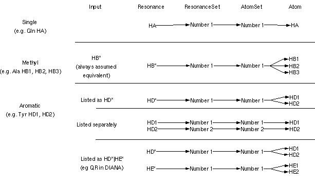
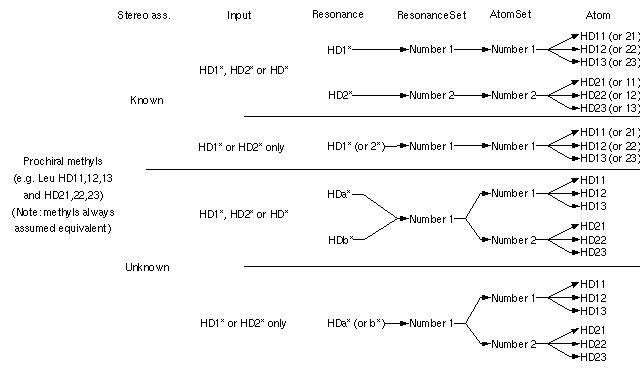

| ||||||||||||||||||||||||||||
Concepts:ResonanceAtomLinks
| |||||
Schemas describing the Resonance-Atom link...
The following schemas illustrates how the connection between the Data Model Resonance to Atom objects is handled via the ResonanceSet and AtomSet objects. The ResonanceSet object handles ambiguity on the resonance-atom assignment level, the AtomSet object handles 'atom groups' that are in fast exchange on the NMR timescale, for example methyls.
Schema 1: Treatment of single atoms, single methyls and aromatic atoms.

Schema 2: Treatment of prochiral methylene groups.

Schema 3: Treatment of prochiral methyl groups.
